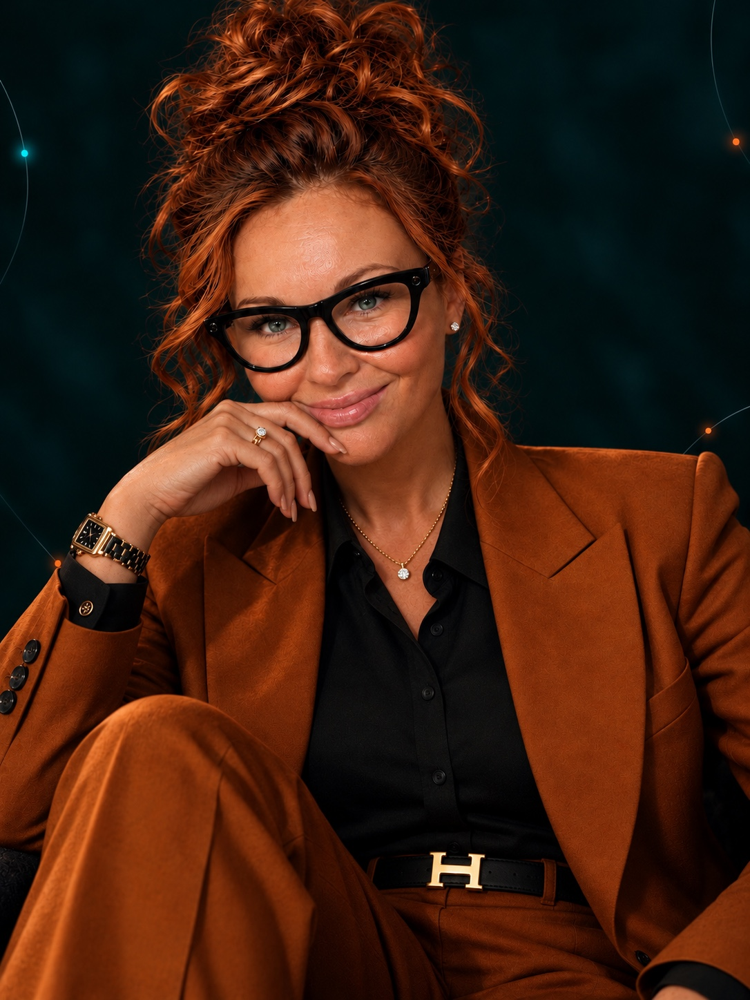

«Снова то же самое»
В отношениях, деньгах или работе повторяются похожие ситуации. Хочется увидеть, что поддерживает этот круг.
Первое касание 3 часа онлайн
Живой разговор, практика и знакомство с системным подходом и методом I- System.
Увидеть связи. Понять свою ситуацию. Наметить следующий шаг.
С вами — Алина Заманская
Автор метода I- System · 20 лет практики13:00–16:00 по Лондону · Zoom
01 / О встрече
Вы многое понимаете о себе. Но в отношениях, работе или важных решениях снова оказываетесь в знакомой точке.
«Первое касание» — возможность остановиться и посмотреть на свою ситуацию шире. Познакомиться со мной, попробовать системный подход на практике и задать вопросы, которые давно хочется обсудить.
Будем замечать связи между вашим опытом, обстоятельствами и привычными реакциями — и искать, где появляется возможность действовать иначе.
Как пройдут три часа02 / Системный подход
То, что происходит в одной её части, может отражаться на других.
Например, тревога о деньгах может быть связана и с реальными расходами, и с потребностью в безопасности, и с прошлым опытом. Мы рассматриваем эти связи как вопросы для исследования.
Нажмите на область и посмотрите на ситуацию с другой стороны.
Какие решения вы принимаете по привычке — и какой выбор становится возможным сейчас?
03 / Для кого
Можно прийти с конкретным вопросом. Или с ощущением, что пора что-то менять, хотя пока трудно понять — что именно.
В отношениях, деньгах или работе повторяются похожие ситуации. Хочется увидеть, что поддерживает этот круг.
Вы многое знаете о себе, однако в важный момент привычная реакция оказывается сильнее намерений.
Переезд, расставание, новая работа или роль. Нужно заново почувствовать опору и выбрать направление.
Вам важно увидеть специалиста в работе и попробовать подход, прежде чем выбирать дальнейший формат.
Первое касание
Начать можно
со своего вопроса.
Необязательно приходить с готовым ответом.
Достаточно интереса к себе и своей жизни.
04 / Программа встречи
Будем разговаривать, пробовать и рассматривать реальные ситуации. Работать можно в комфортной для себя степени открытости.
Контакт
Расскажу о себе, методе I- System и о том, как системный подход помогает рассматривать жизненные ситуации.
Опыт
Выполним упражнения, чтобы заметить свои реакции, важные связи и привычные способы действовать.
Новый взгляд
На примерах участников смоделируем ситуации и исследуем возможные направления изменений.
Действие
Обсудим ваши вопросы и то, что хочется взять из встречи в свою повседневную жизнь.
Это групповая встреча. Глубина работы с отдельными запросами зависит от времени и хода практики.
05 / С чем вы можете уйти
Свои наблюдения, новые вопросы и ориентир для дальнейшего движения.
Почувствуете, как проходит работа, и составите собственное впечатление о подходе.
Сможете заметить связи, которые теряются, когда всё внимание занято одной проблемой.
Подумаете, что можно попробовать самостоятельно и какая поддержка нужна дальше.

С вами на встрече
лет
практики
В центре моей работы — человек и системы, частью которых он является.
Я работаю с отношениями, жизненными переходами и сложными решениями. Соединяю системный подход, расстановочную практику, EMDR и логотерапию в интегративной работе.
На этой встрече вы сможете познакомиться со мной в живом разговоре, почувствовать мой способ работы и понять, насколько он вам близок.
Нет. Начнём с понятного введения и примеров из жизни. Специальная подготовка не нужна — достаточно любопытства и готовности попробовать.
Да. Можно прийти, чтобы познакомиться со мной и методом. Если вопрос пока звучит как «хочу что-то изменить», это тоже отправная точка для размышления.
На встрече будут практика и работа с примерами участников. Можно предложить свой запрос, но индивидуальная работа с каждым не гарантируется: это групповой формат на три часа. Наблюдения можно делать и в процессе работы с другими ситуациями.
Делитесь только тем, чем готовы делиться. Можно сначала наблюдать и включаться постепенно. В начале встречи договоримся о бережном общении и конфиденциальности личных историй.
18 октября 2026 года, с 13:00 до 16:00 по Лондону, онлайн в Zoom. На Тенерифе это также 13:00–16:00, в Мадриде — 14:00–17:00. Для участия понадобятся интернет и место, где можно спокойно провести три часа.
Напишите мне в Telegram «Первое касание». В переписке уточним стоимость и условия участия, а также детали подключения к встрече.
Перейти в Telegram ↗Первое касание
Возможно, ваш следующий шаг начинается с нового взгляда на привычную ситуацию.
Сохранить дату в календарь18 октября
2026
Для записи напишите мне «Первое касание». Уточним стоимость и детали участия.
Записаться в Telegram